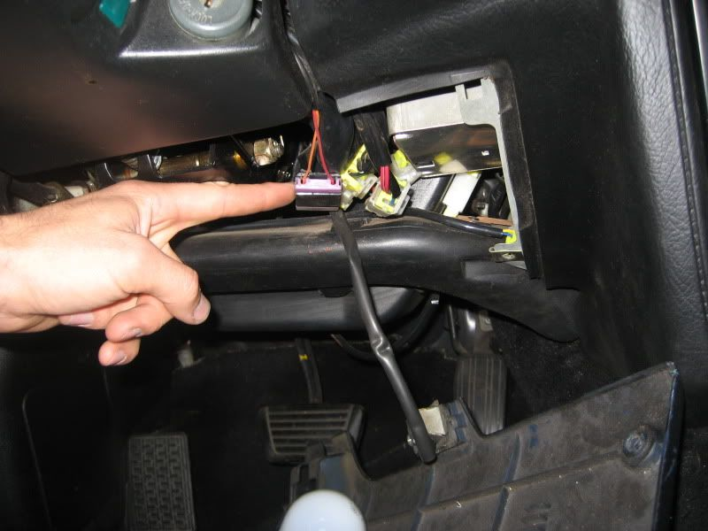
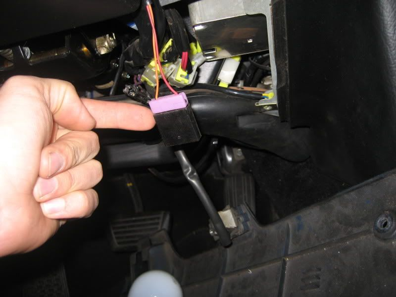
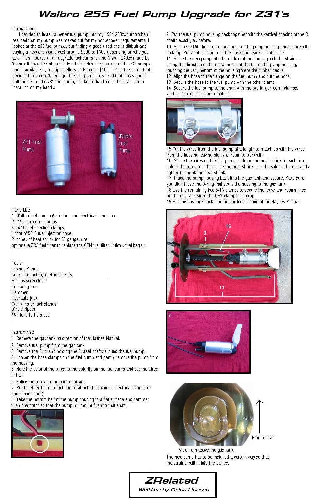
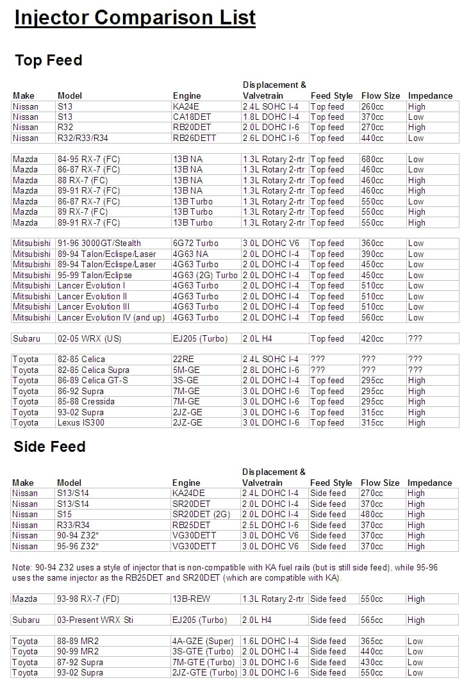
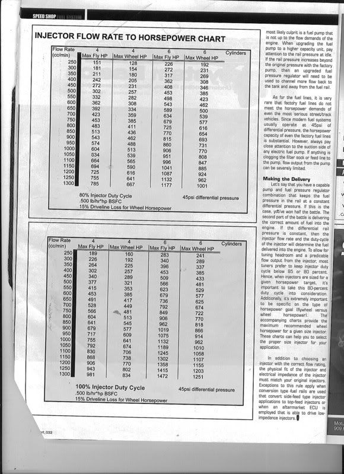

-
Basic z31 modifications list.
Sleepy Eyes: (headlights on while down) Page 1
Walbro Install: Walbro 255lph fuel pump install. Page 1
Headlight switch repair: Headlights malfunctioning? Page 1
Boost controller: Raise your boost. Page 1
Aftermarket gauges: AFR, Tach, Oil press. Page 1
Digital to Analog gauges: How to swap them Page 1
Infiniti or 240sx In Cab mirror: Direct bolt on. Page 1
If there is a modification in this list, then there is a description on how to perform it in this thread. Read the thread to find it! If you do not understand something in the description then THIS IS NOT THE THREAD FOR QUESTIONS! Lets keep clutter to NOTHING. Start a new topic if you have questions. All questions and comments that are not informative will be deleted from this thread!
If you would like to add your easy to perform z31 modifications, please do so here. Keep the post clear and easy to understand. Add a COUPLE of pictures. We don't need a million pics on how to change your mirrors. If you do add pictures and they are hosted, please have the intentions of LEAVING THEM WHERE THEY ARE. This way the pictures will ALWAYS show up for people! If you add links, please make sure they are good links! This is important!
Any modifications that are not easy to understand, or are not considered to be easy, will be deleted from this thread. Do not add in your "How to swap in an S13 subframe" in this thread.85 Z31 6.0 LSX turbo 766whp/792wtq
04 GTO, LS6, big cam, porting, N20… underway for summertime daily driver. -
Re: Easy and common z31 modifications.
Sleepy Eyes: (Headlights on while down)
This worked on my wifes 1984 Anniversary Edition and my 1985 GLL turbo.
Your headlights will only come up when you do one of two things. 1. Push the headlight up button. Or 2. Turn on your brights. Your headlights will remain in the up position until you depress the switch AND turn off your lights.
1. Remove cover under your steering column. If you cannot do this, you have no business attempting this mod.
2. Locate the clip I am pointing at. In my cars it was purple and black.
3. Unplug the clip
4. put everything back together.
Clip located.

Clip unplugged
85 Z31 6.0 LSX turbo 766whp/792wtq
04 GTO, LS6, big cam, porting, N20… underway for summertime daily driver. -
Re: Easy and common z31 modifications.
Walbro Install
 -
Re: Easy and common z31 modifications.
Here is a good one, And others can be found in my Signature
Headlamp Problems
If you have a head lamp that flickers or has gone out all together you'll have to determine whether it's the lamp, socket or switch in the steering wheel column. Remove the lamp from the frame and inspect the socket and head light spade terminals for corrosion. If it the socket is corroded best thing to do is to get a replacement from Nissan or the auto parts store. They're only a few bucks. Don't fool around.
If the socket and lamp pins look good check the continuity of the lamp. Using an ohm meter, the three pins should have under 1ohm resistance in any combination. Obviously, if the lamp has no continuity in any one or more combinations it's bad. If you don't have a meter, carefully jumper the lamp to a battery to check the high and low beams. If the Lamp checks out ok, turn the head light switch on including the high beams and check for 12 volts dc at the socket. Two pins should have 12vdc and one will be 0v. If you have an ohm meter check continuity of the 0 volt contact to chassis ground. It should be 0 ohms.
Now, if the lamp is good, there is 12vdc to the socket and good ground continuity, two things remain as the possible cause. The switch in the steering wheel column or the "mechanical" contact between the socket and the lamp. Check the socket first since you are likely to have it out at this point. Commonly the female spade terminals in the socket loosens and makes contact intermittently. Looking into the socket you can see the end of the spade terminal. Also you can see a narrow space along side the terminal. Slip a small screw driver down the space and pry against the connector to close the gap in it. Don't close it all the way. Close it enough to get a good tight grip on the lamps spade terminals. This should restore the normal function of the intermittent head lamp.
If you still don't have 12vdc at the socket the only thing left is the steering column switch. The switch doesn't cost a lot and I recommend replacing it. You can also clean the contacts but this may or may not be a lasting fix. It's your call. You will need a steering wheel puller. A cheap one will do. Remove the horn fuse and then take off the rubber horn cover. Loosen the large steering wheel nut and back it off one or two turns but don't take it off. Set up the puller and start cranking away. The puller will get quite tight before the wheel lets loose. It will let go with a violent bang so be prepared! Once it's loose, take the puller off and remove the nut. Pull the wheel off and grab the washer as you do or it will slip inside the wheel assembly where it may be difficult to retrieve. You should now see the headlight switch. Clean it or replace it.
Here are some comon problems and fixes:
Intermittent interior lighting and exterior marker lighting failures.
Symptom: Occasional burning smell. Fuses all look good.
Reason:
Corrosion on lightswitch connector #12 causing poor connectivity and overheating.
Action Taken:
Cleaned plug male connector with fine grit sandpaper. Harness female connector was beyond repair and further damaged trying to extract it from the plug. The female connector was cut off and the wire was cutback and stripped. A new female connector was soldered in place. These connectors can be replaced with a little effort, instead of using a crappy aftermarket crimp connector.
lacement.png" alt="" />
Artists rendering of connector replacement:
Intermittant Headlight failure:
Symptom:
One or Both headlights do not operate properly. Fuses all look good.
Reason:
Corrosion buildup on light switch contacts causing weak or no connectivity. Contact fingers warped from overheating.
Tools Needed:
* 19mm socket with extension and ratchet
* Phillips screwdriver
* Wire stripper/cutter
* Soldering iron
* Xacto blade
* Metal pin
* Fine grit sandpaper
Action Taken:
Cleaned contact points with fine grit sandpaper to remove corrosion. Carefully re-adjust contact fingers.
After a few years, this started giving me intermittant failures. I cleaned and re-adjusted it twice before I sought out a replacement at the junkyard. Some owners have good luck with cleaning them, for others its more temporary solution.
When cleaning the contacts, use fine grit sandpaper. Try not to remove too much material or you may need to readjust the contact fingers.
Re-adjusting them is a hit or miss affair and i would try to avoid the trial and error, which is why i got a replacement after two temporary fixes.
Clean both the upper and lower contact surfaces. Blow out any excess debris.
Contacts labeled for what they control Below
Accessing the combo switches
1. First you want to remove the steering wheel column covers. To do this, there are 4 Phillips head screws that hold this all together. The outer two hold the halves together and the inner two hold the cover to the combo switch. Now remove the key light connector and the cover will be free. Be careful not to crack the cover when pulling the lower half over the cruise control switch on GL models.
2. Now you can pry the horn cover off the steering wheel with your hands. Start at the top and pull. You will now see the 19mm nut that holds the wheel to the shaft. Remove this nut and use a steering wheel puller to remove the wheel. Another way to remove this without the puller is to loosen this nut but leave it on about 3 turns. Now shake the wheel side to side and top to bottom. It will come loose and the nut is still there to keep the wheel from hitting yourself in the face with it.
3. Next disconnect harness from back of cluster combo switches. Once all this is done locate the single Phillips head screw holding column switches in place and loosen until almost out. Disconnect the connectors and remove switches off the shaft. You are now done on the lower driver side.
Article and Images by ZKarma
-
Re: Easy and common z31 modifications.
Here is a great link on how to install a boost controller on a z31.
http://www.xenonz31.com/boostcontroler.html85 Z31 6.0 LSX turbo 766whp/792wtq
04 GTO, LS6, big cam, porting, N20… underway for summertime daily driver. -
Re: Easy and common z31 modifications.
Here is a good link for installing misc. gauges.
http://www.xenonz31.com/aftermarket%20gauges.html85 Z31 6.0 LSX turbo 766whp/792wtq
04 GTO, LS6, big cam, porting, N20… underway for summertime daily driver. -
Re: Easy and common z31 modifications.
Actually, there is a whole list of different modifications on xenon's site. Here they are.
www.xenonz31.com/modifications.html85 Z31 6.0 LSX turbo 766whp/792wtq
04 GTO, LS6, big cam, porting, N20… underway for summertime daily driver. -
Re: Easy and common z31 modifications.
Looking for a different rear view mirror? infiniti M30 direct bolt in, little wider mirror and still pretty sleek.
not the side view mirrors.. but center in cab rear view mirror. Direct BOLT IN.
If you cannot figure out how to take off your mirror. Do not perform this mod.86 NA auto 2+2 with 300k miles, now turbo with 5 speed -
Re: Easy and common z31 modifications.
I have the mirror out of a 94 240sx in mine, looks very simular, but is closer to the roof.tert72 wrote: Looking for a different rear view mirror? infiniti M30 direct bolt in, little wider mirror and still pretty sleek.
not the side view mirrors.. but center in cab rear view mirror. Direct BOLT IN.
If you cannot figure out how to take off your mirror. Do not perform this mod.
This is good for the really tall people (i'm 6'4") who get a huge blind spot in the front from the stock mirror..
It is a direct swap in affar…Kevin
---------------------------------------
1986 NA 5sp - Bone stock, but in good shape -
injector sizing/injector flow rate
Saturated = High Impedence
Peak and Hold = Low Impedence


he gives me shit all the time about the money i spend on my car but he simply doenst understand what type of "high" you get from watching a stock car transform into something alive with as much emotion and feelings as any human.Originally posted by PurePontiacKid -
Re:
For headlights on while down mod… I've had three cars that all needed to have two separate relays bypasses to fully disable the auto up/hold up feature of the headlight motors. 6E and 64E are the connectors the relays are hooked to in the FSM. The picture in Mitch's writeup below has both circled in red.
http://www.auz31club.com/viewtopic.php?f=20&t=66 website taken down (edit 04/16/14 -Z_Karma)
pretty much covers it, but I have never been able to achieve his results with only bypassing one relay.85 300zx: stolen by mongooseZ31
88 300zx: stolen by mongooseZ31
86 300zx: shitty DD
86 300zx: parts car
88 300zxT: heart of my next 86
LED's mofo. LED's everywhere. -
That is only necessary if you wish to be able to raise/lower the headlights while they are on, and with high beams. Unplugging the connector under the dash works on all 84-89 Z31s, but only gives you low beams when down and once you raise them, you need to shut them off to put them back down.thisman1967gt wrote: For headlights on while down mod… I've had three cars that all needed to have two separate relays bypasses to fully disable the auto up/hold up feature of the headlight motors. 6E and 64E are the connectors the relays are hooked to in the FSM. The picture in Mitch's writeup below has both circled in red.
http://www.auz31club.com/viewtopic.php?f=20&t=66
pretty much covers it, but I have never been able to achieve his results with only bypassing one relay.- VG30DET (HE341) 86 300ZX - 1982 280ZX Turbo - Headered NA 1986 300ZX 2+2 - 2000 Xterra - -
That's what I was stating, but I guess I wasn't clear enough. Thanks.85 300zx: stolen by mongooseZ31
88 300zx: stolen by mongooseZ31
86 300zx: shitty DD
86 300zx: parts car
88 300zxT: heart of my next 86
LED's mofo. LED's everywhere. -
my friends 1985 Toyota Supra has stock injectors on a 6M. they are 3cc higher then stock 87 Z31 injectors ill find out if they are high or low imp tho cause i don't remember i just know its a direct swap into the 87 z31's..so that should help lolNew 2 Z wrote: injector sizing/injector flow rate
Saturated = High Impedence
Peak and Hold = Low Impedence
Non turbo, 200K+ mile club, 60mm TB, 149WHP 168WTQ -
links are down

Copyright © 2006–. All rights reserved. Privacy Policy